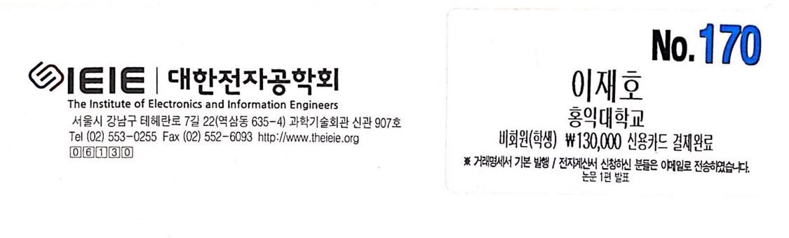
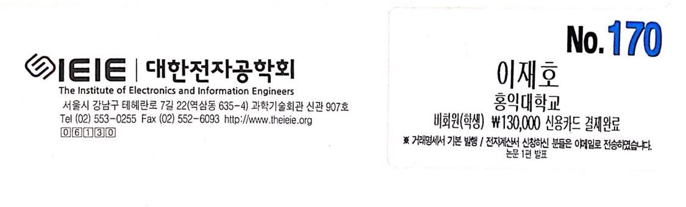

머신러닝 기반 인터넷 비속어 필터링 시스템(3인) (2018.03 ~ 2018.10)
사용기술: Javascript, Node, Express, AWS, tensorflow, Anaconda3
사용기술: Javascript, Node, Express, AWS, tensorflow, Anaconda3
비속어로 판단된 데이터를 DB에서 서칭한 순화된 언어로 필터링하여 화면에 다시 뿌려주는 역할
3명의 전공분야(머신러닝, 프론트, 백앤드)가 달라서 처음에 프로젝트를 선택하는데, 서로의 의견이 충돌하여
프로젝트 진행이 되지 않았다. 각자 하고 싶은 것이 달라서 생겼던 문제였다.
팀원끼리 프로젝트를 선택하기 위해서는 약간의 양보와 소통이 중요하다고 느꼈다.
그 결과 프로젝트를 선택하였고, 무사히 종합설계 프로젝트를 끝낼 수 있었다.
 
